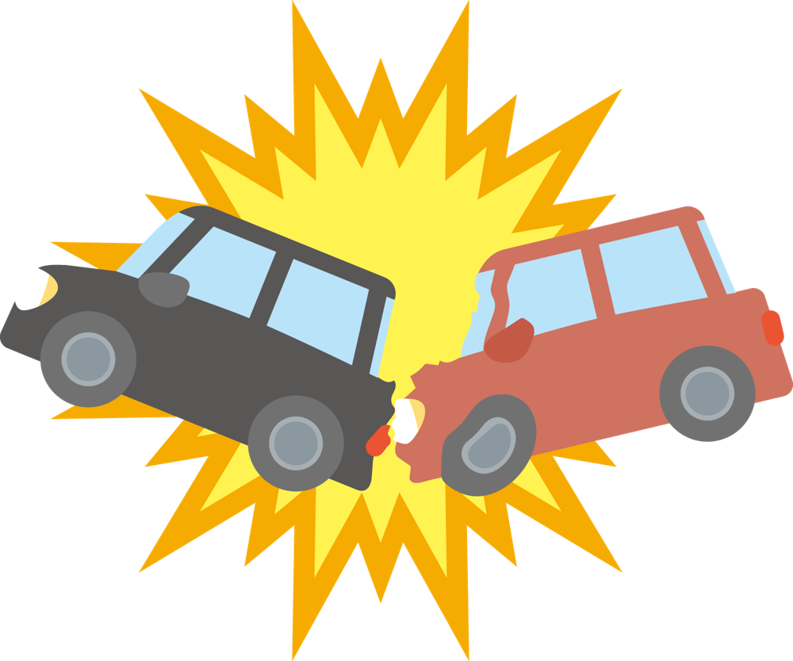

交通事故
整形外科と整骨院の併用。通院の間をあけすぎないで

交通事故のケガで通院するとき、「整形外科と整骨院、どちらに通えばいいの？」とよく聞かれます。答えは、「両方に通えます」です。
それぞれの役割
- 整形外科
医師が診察し、レントゲンなどの検査、お薬や湿布の処方、診断書の作成を行います。ケガの状態や経過を、医師が確認します。 - 整骨院
柔道整復師が、痛みやケガの状態に合わせて施術を行います。通いやすい時間に、こまめに施術を受けられます。
整形外科で経過を確認してもらいながら、当院で施術を受ける。この通い方を「併用」といいます。ケガの状態によっては当院だけで施術を受けられる場合もありますが、保険会社とのやりとりでは医師の診断が必要になることが多いため、提携の整形外科との併用をおすすめしています。
整形外科に30日以上行かないと
気をつけたいのは、整形外科に行かない期間です。整骨院に通っていても、整形外科に30日以上行かない期間があると、保険会社から補償を打ち切られることがあります。
また、整骨院への通院も、間が長くあくと「もう治った」と受け取られることがあります。痛みが残っているうちは、間をあけすぎないようにしましょう。
当院では、整形外科に行く日も一緒に予定に入れ、通院の空白ができないようにしています。
江別本院では、年間300件ほどの交通事故の患者さんに対応しています。事故の直後の痛みの強い時期から、普段の生活に戻るまで、ケガの状態に合わせて施術を続けます。
整形外科を受診するときのコツ
- 気になる症状はすべて伝える
首だけでなく、腰や肩の痛み、手のシビレ、頭痛など、気になる症状はすべて医師に伝えましょう。 - 整骨院に通っていることを伝える
当院に通っていることを伝えておくと、話がスムーズです。 - 次の受診日を決めて帰る
次にいつ来ればよいかを確認し、当院の予約と一緒に予定に入れておきましょう。
提携の整形外科は、当院からご紹介できます。事故にあったら、病院へ行く前にご連絡ください。
こんなときはすぐに医療機関へ
- 頭痛や吐き気が強くなってきた
- 手足のシビレや、力の入りにくさが出てきた
- 痛みがどんどん強くなる
当てはまるときは、すぐに医療機関を受診してください。事故のあとの不安なことは、LINEやお電話でお気軽にご相談ください。くわしくは交通事故でケガをされた方へのページをご覧ください。
← ブログの一覧へ